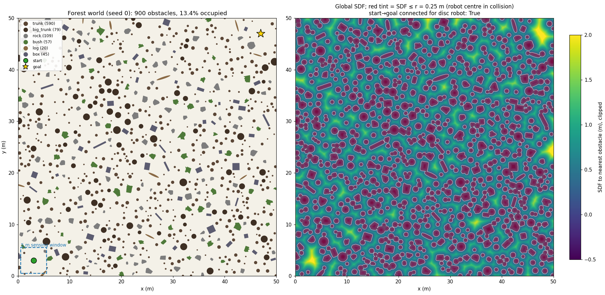
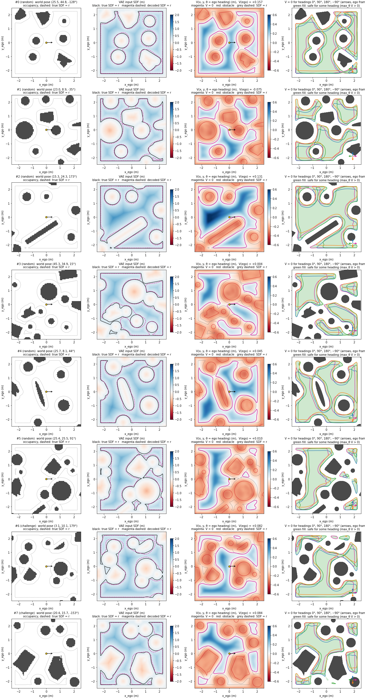
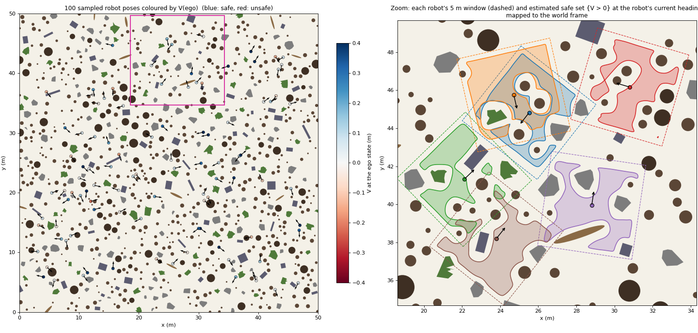
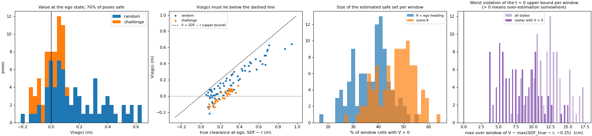
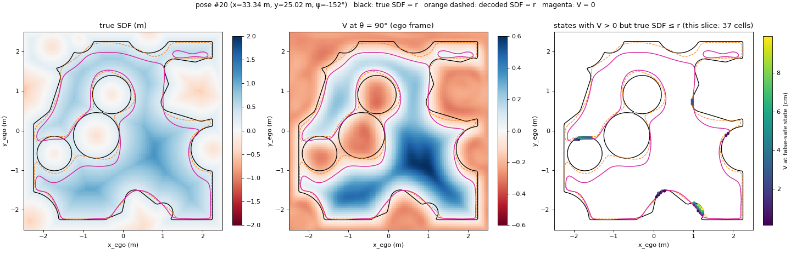

Adaptive safety filter: simulation validation
Hub for the multi-session validation of the latent-conditioned HJ safety filter in AdaptiveSF/.
Last updated 2026-11-19 (session 2).
Goal: build simulated environments, run the trained adaptive safety filter (SDF → VAE latent z → value network
Vθ(x, z)) in closed loop with a goal-seeking nominal controller that ignores obstacles, collect
metrics, and render animations. Method: AdaptiveSF/document/method.tex; model details:
AdaptiveSF/README.md.
Resume in a new session
Point the new session at this file: “Read SimValidation/index.html and continue with stage N.”
Everything lives in /Users/xinlei/Documents/ECE792_Project/SimValidation/; the trained models are imported
from the sibling AdaptiveSF/ folder (no copies). Python on the Mac: the conda base env (torch 2.10, MPS). On the GPU machine: git pull from the GitHub repo and see the top-level README.md.
cd /Users/xinlei/Documents/ECE792_Project/SimValidation
python scripts/s1_generate_forest.py --seed 0 # world -> worlds/forest_seed0.json, map figure (≈3 s)
python scripts/s1_check_value_function.py --n-stats 100 # SF pipeline at 100 random poses (≈45 s on MPS)
python scripts/s1_inspect_pose.py --pose-id 20 # zoom into one pose of the checkEvery stage should add its scripts as scripts/sN_*.py, write outputs to results/stageN/,
and append a section plus a session-log entry here.
Conventions (fixed by the trained models)
| Item | Value |
|---|---|
| World frame | x right, y up, metres; map [0, 50] × [0, 50]; nothing outside the map (no walls, for now) |
| Robot | Disc, r = 0.25 m; pose (x, y, ψ) |
| Dynamics | Dubins car ẋ = v cos θ + dx, ẏ = v sin θ + dy, θ̇ = ω + dθ; v ∈ [0, 1] m/s, ω ∈ [−1, 1] rad/s, |dx|, |dy| ≤ 0.1 m/s, |dθ| ≤ 0.1 rad/s |
| Sensing window | 5 m × 5 m, 100 × 100 cells of 0.05 m, centred on the robot, +x along heading; arrays indexed [ix, iy] |
| SDF | Metres, + in free space, obstacles not inflated; everything outside the window counts as obstacle (closed border) |
| Value | V(x, y, θ; z) in metres, robust over a 6 s horizon, no discount. V > 0 = safe; labels clipped at −0.25 |
| Heading slice | In the ego frame the robot is at (0, 0, 0); “θ = ego heading” means the θ = 0 slice |
Stage 1 · Static forest world and value-function check done
Scope agreed for this stage: build the environment only (no controller), place the robot at random collision-free poses, run the full adaptive-SF pipeline, and look at the zero-level set of the value function.
1a. Forest world generator
Obstacles are analytic shapes with exact signed distance, so the true SDF can be queried at any point (used for collision checks now and for ground truth later). Placement is rejection sampling on bounding discs with a minimum gap, a 2 m clear disc around start and goal, and a start→goal connectivity check for the disc robot.
| Parameter | Value (seed 0) | Note |
|---|---|---|
| Map | 50 m × 50 m | start (3, 3), goal (47, 47) |
| Obstacles | 900 | 590 trunks (r 0.12–0.35 m), 79 big trunks (r 0.35–0.75 m), 109 rocks (random convex hulls), 57 bushes (non-convex star polygons), 20 fallen logs (thin boxes / ellipses, 1.5–3.5 m), 45 boxes |
| Min. gap between bounding discs | 0.15 m | Smaller than the robot diameter, so some passages are dead ends |
| Occupied area | 13.4 % | |
| Free-space clearance (10 / 50 / 90 pct.) | 0.11 / 0.43 / 0.89 m | Distance from free cells to the nearest obstacle |
| Start → goal connected | yes | For clearance r + 5 cm |


simenv/world.py → DEFAULT_FOREST and are easy to change (density, size ranges, mix, gap).1b. Value-function check at random poses
100 poses: 70 uniformly random with clearance > r + 5 cm, and 30 “challenge” poses 8–45 cm from an obstacle surface (beyond r) and roughly facing it. For each pose:
- Local occupancy: true occupancy of each window cell centre (perfect perception, no occlusion).
- SDF from occupancy with the closed border (
sdf_from_occupancy, README §2.3). - VAE encode → z; value network on the full 100 × 100 × 36 grid.
- Checks against the exact window SDF. No DP reference exists for these windows, so the checks are necessary conditions only: at t = 0, V can never exceed SDF − r.








Findings
- The pipeline runs end to end on the forest. The zero-level sets follow the obstacles and close off narrow gaps, and they keep a buffer beyond SDF = r. That buffer is expected from the 6 s robust horizon with bounded disturbance. The safe set never reaches the window edge because everything outside the window counts as an obstacle.
- The forest is partly out of distribution for the VAE (rocks, bushes and ellipses were not in its training set, which had discs and boxes only). At SDF = r the boundary error is 3.8 cm (2.8 cm on its own test set). Errors lean conservative: 5.9 % of free cells are decoded as not free, and 0.15 % of non-free cells are decoded as free.
- Small, localized over-estimation. 0.11 % of states have V > 0 although the true clearance is already ≤ r. All of them are on the boundary band at concave corners (Figure 5), and V there is at most 9.9 cm. This matches the README's end-to-end false-safe rate (0.09 %). It argues for a small margin in the filter (switch at V ≤ ε with ε ≈ 5–10 cm). That choice is for stage 4.
- Sensing (occupancy → SDF) is not the bottleneck. The 5 cm-grid SDF differs from the exact SDF by 0.8 cm on average.
- Timing. The full grid takes 0.31 s on MPS. Closed loop only needs V and ∇V at the ego state plus one encode per sensing update, so it will be much faster.
Limits of this check. Without DP or rollouts these are necessary-condition checks only; they cannot detect a safe-set boundary that is too large because of future (t > 0) infeasibility. Stage 4 rollouts (or a DP solve on a few forest windows) will close that gap.
Notes to revisit (deferred on 2026-11-19)
Stage 1 was accepted as is. Revisit these points later; they do not block Stage 3.
- Density. 900 obstacles / 13.4 % occupied, with about 5–8 obstacles per window. Denser, sparser, or a density gradient along the route?
- Narrow gaps. The minimum gap (0.15 m) allows dead-end passages narrower than the robot. Keep them (they exercise the filter), or enforce a gap of at least 2r + margin?
- Map boundary. Currently there are no obstacles outside [0, 50]². Add boundary walls?
- Perception model. Perfect local crop for now. Add LiDAR ray casting with occluded cells treated as occupied (conservative) or as free?
- Obstacle shapes. Keep rocks, bushes and ellipses (out of distribution, a harder test), or restrict to discs and boxes (matching training) for a first clean result?
Stage 2 · Dynamic environments planned
Not started. Design decision to make first: the value function is trained for static SDFs, so moving obstacles need a mapping into the static window. Options: (a) snapshot SDF at each tick, re-encoded at a high rate; (b) obstacles inflated by their reachable set over a short horizon; (c) swept-volume occupancy. Candidate scenarios: pedestrians on straight lines and random walks crossing the route; a few moving discs added to the static forest.
Stage 3 · Nominal MPPI and log-MPPI baseline planned, paused
The full plan is in notes/stage3_plan.md. Work continues on an NVIDIA machine, because PyCUDA cannot run on the Mac (Apple M3 Pro, no CUDA).
- Reproduction first: port the CUDA rollout kernel and settings of log-MPPI_ros to PyCUDA. Re-run the paper's Table II on the repo's Gazebo forests:
forest0.worldhas 250 trees andforest1.worldhas 500, with 10 trials each for MPPI and log-MPPI. The paper reports 2 vs 0 crashes and 7 vs 1 crashes, with lav of 158.7 / 157.9 m and 76.1 / 72.6 m. One mp4 per forest × method. - Our forest:
- Nominal MPPI ignores obstacles.
- The baseline is log-MPPI with the repo's 1e7 crash penalty, applied on the same 5 m ego window the safety filter sees.
- 50 Hz control, 6 s horizon, v ∈ [0, 1], ω ∈ [−1, 1].
- 50 saved start/goal tasks, with mp4s.
Stages 4–6 · Closed loop, experiments, animation planned
- Stage 4, filter: re-sense and re-encode z at a sensing rate; each control tick, evaluate V and ∇V at the ego state (in the frame of the last window); apply the least-restrictive switch or a QP / CBF-style filter. Open choices: ε margin, sensing rate vs. control rate, what to do when V(ego) < 0.
- Stage 5, experiments: multiple seeds and start/goal pairs; collision rate, success, time to goal, intervention rate; baselines: nominal only, and the filter with the exact-SDF DP value if feasible.
- Stage 6, animation: world view and ego-window inset with the live V = 0 set; ffmpeg is available.
File index
| Path (relative to SimValidation/) | Purpose |
|---|---|
simenv/shapes.py | Circle and polygon (convex or non-convex) with exact SDF; random shape factories |
simenv/world.py | World (SDF queries, rasterization, save/load JSON), generate_forest, connectivity check |
simenv/sensing.py | Ego/world transforms, local occupancy window, SDF with closed border, exact window SDF; imports AdaptiveSF/adaptivesf_models |
scripts/s1_generate_forest.py | Generate and plot a forest world |
scripts/s1_check_value_function.py | Random-pose SF check, figures 2–4, vf_metrics.json |
scripts/s1_inspect_pose.py | Detailed view of one pose (figure 5) |
worlds/forest_seed0.json | Saved world (shapes, start, goal, meta) |
notes/stage3_plan.md | Stage 3 plan: repo analysis, parameters, PyCUDA port, experiments, mp4s, GPU-machine setup |
results/stage1/ | Figures, forest_seed0_stats.json, vf_metrics.json (per-pose numbers and poses) |
Session log
simenv (analytic shapes, forest generator,
ego-window sensing). Generated forest seed 0 and ran the value-function check at 100 poses. Fixed the over-estimation
metric so it respects the −0.25 label clipping. Waiting for review of world density, gaps, boundary, perception and shapes.